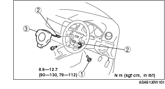

Driver-side air bag module removal/installation
- • Handling the air bag module improperly can accidentally deploy the air bag module, which may seriously injure you. Read the service warnings and cautions before handling the air bag module.
- (See SERVICE WARNINGS.) (See SERVICE CAUTIONS.)
1. Turn the ignition switch to the LOCK position.
2. Disconnect the negative battery cable and wait for 1 min or more.
3. Remove in the order indicated in the table.

4. Install in the reverse order of removal.
5. Turn the ignition switch to the ON position.
6. Verify that the air bag system warning light illuminates for approx. 3 s and goes out.
- • If the air bag system warning light does not operate, refer to the on-board diagnostic system (air bag system) and perform inspection of the system.